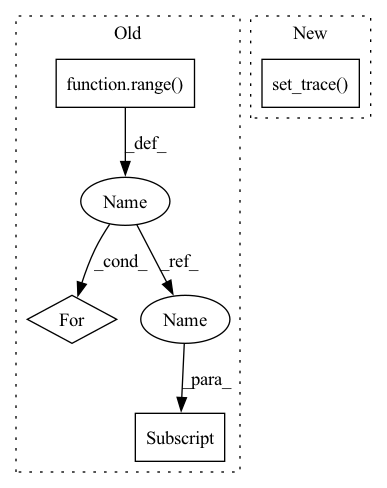

Pattern ID :19046
Before Change
obs, actions, dones = data_dict["states"], data_dict["actions"], data_dict["dones"]
dataset = []
trajectory_ind = timestep = 0
for i in range( len(dones)) :
if dones[i] or len(dones) == i + 1:
// If dones[i] is true, next obs is from new trajectory, skip; a bit hacky, but fine for prototype
trajectory_ind += 1
timestep = 0After Change
dataset.append({"context": obs[i], "target": actions[i:i+self.k],
"extra_context": obs[i + self.k], "traj_ts_ids": [trajectory_ind, timestep]})
except IndexError:
import pdb; pdb.set_trace()
timestep += 1
i += 1
return dataset
In pattern: SUPERPATTERN
Frequency: 3
Non-data size: 4
Instances Fragment ID: 62060790
Project Name: humancompatibleai/eirli
Commit Name: 15c5cb6b5789e5444c580ef802ed22660d4d4d3d
Time: 2020-07-16
Author: codywild@berkeley.edu
File Name: algos/pair_constructors.py
M Class Name: TemporalOffsetPairConstructor
N Class Name: TemporalOffsetPairConstructor
M Method Name: __call__(2)
N Method Name: __call__(2)
M Parent Class: TargetPairConstructor
N Parent Class: TargetPairConstructor
M File Name: algos/pair_constructors.py
N File Name: algos/pair_constructors.py
M Start Line: 50
M End Line: 67
N Start Line: 52
N End Line: 75
Before Change
obs, actions, dones = data_dict["states"], data_dict["actions"], data_dict["dones"]
dataset = []
trajectory_ind = timestep = 0
for i in range( len(dones)) :
if dones[i] or len(dones) == i + 1:
// If dones[i] is true, next obs is from new trajectory, skip; a bit hacky, but fine for prototype
trajectory_ind += 1
timestep = 0After Change
dataset.append({"context": obs[i], "target": actions[i:i+self.k],
"extra_context": obs[i + self.k], "traj_ts_ids": [trajectory_ind, timestep]})
except IndexError:
import pdb; pdb.set_trace()
timestep += 1
i += 1
return dataset
Fragment ID: 62060791
Project Name: humancompatibleai/eirli
Commit Name: c12f55bc137b4757dfccf38fda67ccdbb8c898d2
Time: 2020-07-16
Author: codywild@berkeley.edu
File Name: algos/pair_constructors.py
M Class Name: TemporalOffsetPairConstructor
N Class Name: TemporalOffsetPairConstructor
M Method Name: __call__(2)
N Method Name: __call__(2)
M Parent Class: TargetPairConstructor
N Parent Class: TargetPairConstructor
M File Name: algos/pair_constructors.py
N File Name: algos/pair_constructors.py
M Start Line: 50
M End Line: 67
N Start Line: 52
N End Line: 75
Before Change
agreed = 0
for i in tqdm(range( 1, points) ):
// Case: Torchvision Dataset
x, y = test[i]
substitute_result = int(query(substitute_model, x, substitute_size))
victim_result = int(query(victim_model, x, victim_size))
After Change
substitute_result_tensor, substitute_result_targets = query_model(substitute_model, x_data, substitute_input_shape)
victim_result_tensor, victim_result_targets = query_victim(x_data)
import pdb; pdb.set_trace()
print(f"Out of {points} data points, the models agreed upon {agreed}.")
return agreed
Fragment ID: 62060789
Project Name: trailofbits/privacyraven
Commit Name: 5ebe314e32ff094514f3305181e9e89fa920acc2
Time: 2020-11-30
Author: suhashussain1@gmail.com
File Name: src/privacyraven/utils/evaluate.py
M Class Name: AnonimousClass
N Class Name: AnonimousClass
M Method Name: label_agreement(5)
N Method Name: label_agreement(7)
M Parent Class:
N Parent Class:
M File Name: src/privacyraven/utils/evaluate.py
N File Name: src/privacyraven/utils/evaluate.py
M Start Line: 7
M End Line: 45
N Start Line: 7
N End Line: 21